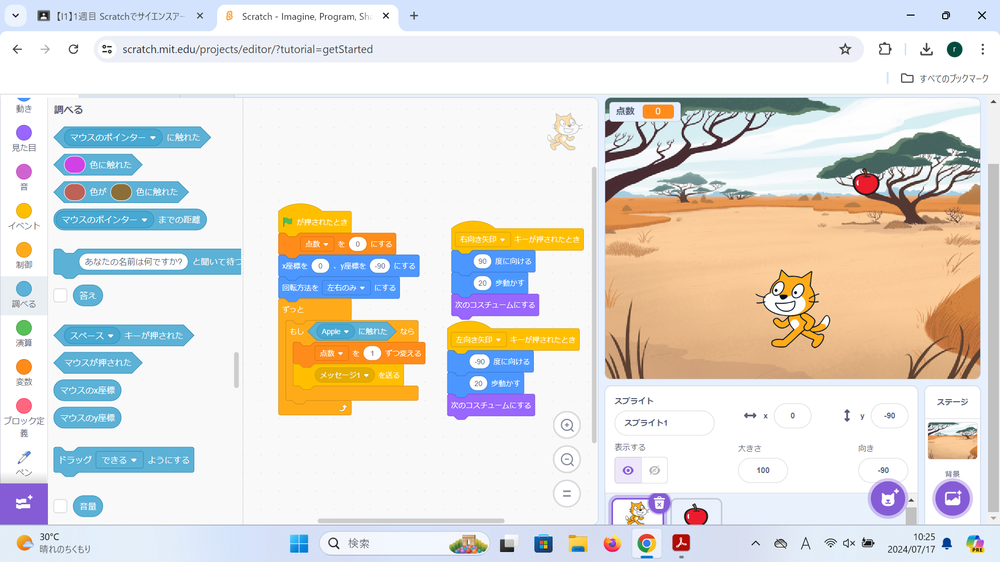

1-2 ゲーム

1.内容
落ちてくるりんごをネコを操作して取っていくというゲームを作った。旗を押すと元の場所にネコが戻り、左右のボタンでネコを動かせるようにした。リンゴは旗が押されると画面上部に移動し、画面の下に行くまで自動で落ちてくるようにした。ネコがリンゴに触れるとメッセージを送り、リンゴはメッセージを受け取ると画面の上部に移動し、再び落ちてくるようにした。変数を使い、リンゴを取った数を表示っできるようにした。
2.感想
プログラムをもっと複雑にしていくと様々なことができるようになるので、スペースや上下のボタンを使って自由に操作ができるようにした。効果音やBGM などをつけて自分のしたいことができるのが楽しかった。プログラムをより複雑にするほどバグが出てきたので変更を加えるごとに実行し、間違えがないか確認しながらプログラムを作った。